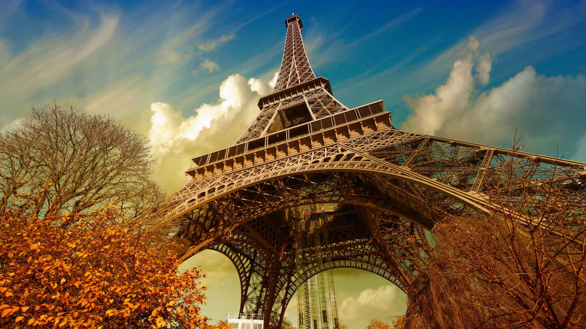
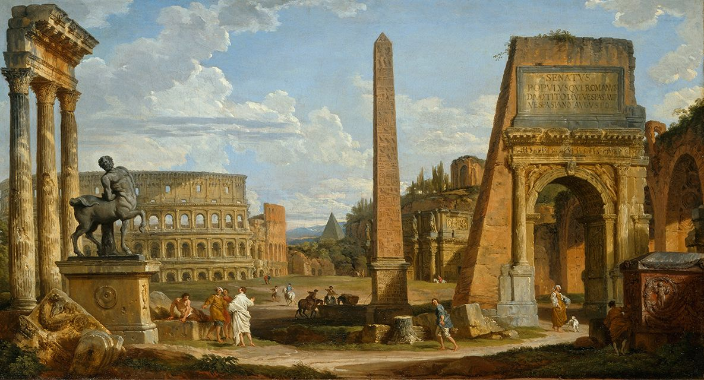
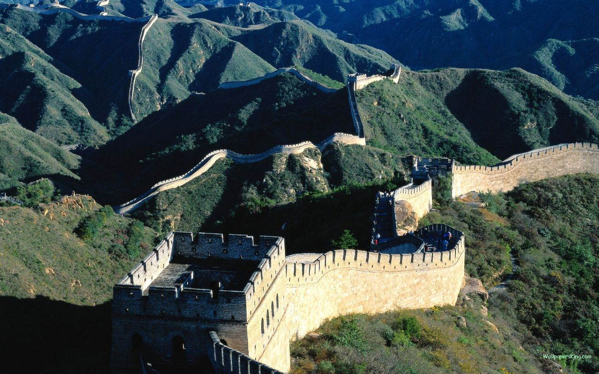
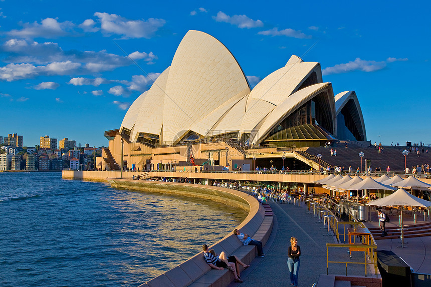
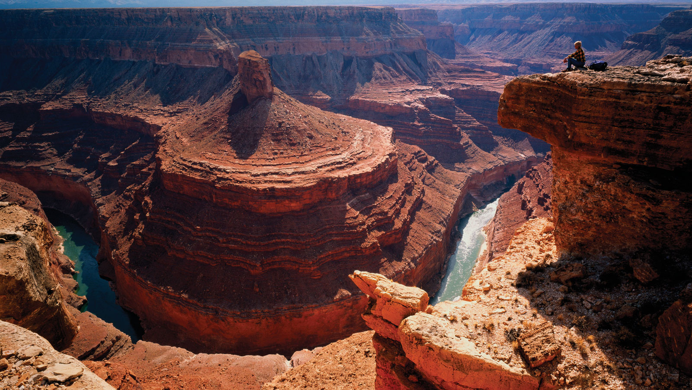

Paris
This iron sightseeing tower was built in 1889 to commemorate the 100th anniversary of the French Revolution.
Read moreKyoto

Cherry blossoms are in full bloom, and you can experience tea ceremony and ancient temples.
Read moreRome
The giant amphitheater, completed in 80 AD, could accommodate 50,000 spectators.
Read moreBeijing
Great Wall This ancient military defense project that runs across northern China is over 20,000 kilometers long.
Read moreSydney
Designed by Danish architect Utzon, this modernist architectural wonder is known for its sailboat shape.
Read moreArizona
The magnificent canyon cut by the Colorado River is up to 446 kilometers long and about 1.6 kilometers deep.
Read moreRio de Janeiro

The statue of Jesus Christ stands on the top of Mount Corcovado, 38 meters high, with his arms outstretched as if embracing the earth.
Read moreGiza

The most spectacular is the Pyramid of Khufu, built in 2600 BC, and is a great masterpiece of ancient Egyptian civilization.
Read more